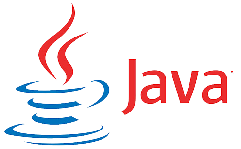

Despre Java

Java este un limbaj de programare și o platformă. Java este un limbaj de programare de nivel
înalt, robust,
orientat spre obiecte și sigur. Java a fost dezvoltat de Sun Microsystems (care este acum filiala Oracle) în
anul 1995. James Gosling este cunoscut ca tatăl Java. Înainte de Java, numele său era Oak. Deoarece Oak era
deja o companie înregistrată, așa că James Gosling și echipa sa au schimbat numele din Oak în Java.
Platformă: orice mediu hardware sau software în care rulează un program este
cunoscut sub numele de
platformă. Deoarece Java are un mediu de execuție (JRE) și API, se numește platformă.
Există multe dispozitive în care Java este utilizat în prezent. Unele dintre ele sunt după cum urmează:
- Aplicații desktop, cum ar fi Acrobat Reader, media player, Antivirus etc.
- Aplicații Web.
- Telefon
- Embedded System.
- Robotica.
- Jocuri etc.
Exemplu de cod
Mai jos este un exemplu de cod Java care afișează în consolă mesajul "Hello Java". Fiecare cuvânt
cheie(keyword) se
va descrie in secțiunile viitoare.
HelloJava.java
class HelloJava{
public static void main(String args[]){
System.out.println("Hello World");
}
}
Tipuri de aplicații Java
Există, în principal, 4 tipuri de aplicații care pot fi create folosind programarea Java:
1) Aplicații independente(standalone)
Aplicațiile independente sunt, de asemenea, cunoscute sub numele de aplicații desktop sau aplicații bazate
pe ferestre. Acestea sunt programe software tradiționale pe care trebuie să le instalăm pe fiecare
calculator.
Exemple de aplicații independente sunt Media Player, antivirus etc. AWT și Swing sunt utilizate în Java
pentru crearea de aplicații independente.
2) Aplicații Web
O aplicație care foloseste partea de server și creează o pagină dinamică se numește aplicație web. În
prezent, tehnologiile Servlet, JSP, Struts, Spring, Hibernate, JSF etc. sunt utilizate pentru crearea
aplicațiilor web în Java.
3) Aplicații Enterprise
O aplicație care este distribuită în mediu fizic, cum ar fi aplicațiile bancare etc. se numește aplicație
pentru
întreprindere(enterprise). Are avantaje precum securitatea la nivel înalt, echilibrarea încărcării și
clusterizarea. În
Java, EJB este utilizat pentru crearea de aplicații enterprise.
4) Aplicații mobile
O aplicație creată pentru dispozitive mobile se numește aplicație mobilă. În prezent, Android și Java ME
sunt utilizate pentru crearea de aplicații mobile.
Platforme Java
Există 4 platforme sau ediții Java:
1) Java SE (Java Standard Edition)
Este o platformă de programare Java. Include API-uri de programare Java, cum ar fi java.lang, java.io,
java.net, java.util, java.sql, java.math etc.
Include topicuri de bază cum ar fi OOPs, String, Regex, Exception, Inner classes, Multithreading, I/O
Stream, Networking, AWT, Swing, Reflection, Collection, etc.
2) Java EE (Java Enterprise Edition)
Este o platformă de enterprise care este utilizată în principal pentru a dezvolta aplicații web și de
întreprindere. Este construit deasupra platformei Java SE. Include subiecte precum Servlet, JSP, Servicii
Web, EJB, JPA etc.
4) JavaFX
Este o micro platformă dedicată aplicațiilor mobile.
3) Java ME (Java Micro Edition)
Este folosit pentru a dezvolta aplicații bogate de internet. Folosește un API ușor de interfață cu utilizatorul.